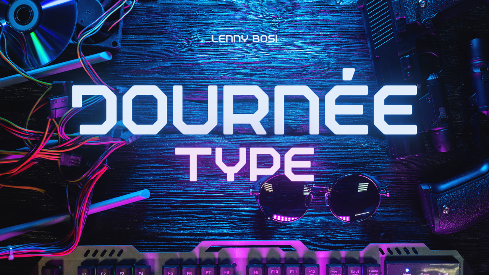
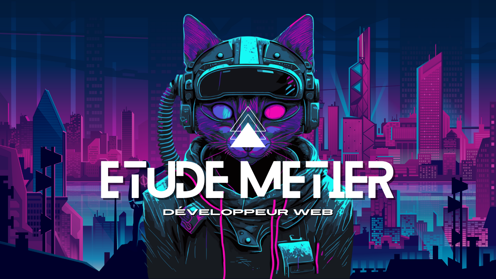

Publié le 20 février
L'entreprise
Nom de l’entreprise : web ingenerie.
Localisation : Robion.
Histoire : ancien coach sportif passionné par la tech il s’est lancé pendant le confinement.
Fonctionnement de l’entreprise : il travaille en freelance pour différents clients en Europe en tant que developpeur web, il n’y a pas de personnels.
Législation : SASU.

Publié le 20 février
Journée type
Une journée type : Le matin réunion SCRUM avec le client et les équipes.Cela dure un quart heure pour passer en revue les objectifs. On appelle ça un sprint. Fin de réunion on commence à coder
De mon cotéer j’ai appris les bases du code et le langage ( CSS, HTML) j’ai codé mon rapport de stage en formant un blog
.

Publié le 20 février
Etude de metier
Les activités sont la création d’applications web et mobiles les métiers de développeur se découpe en deux tranches front-end, back-end
Le front-end s’occupe de la partie visible et l’interface utilisateurs et le back-end s’occupe des bases de données.
Les horaires de bases sont des horaires de bureau mais en freelance on travaille plus librement
Le metier nécessite un diplôme d'ingénieur mais de plus en plus de formations appelées bootcamp forment sur diffèrentes technologies et langages de programmation spécialisées qui permettent l'acces a l'activité de developpeur web. Les évolutions peuvent être de de différentes natures comme, par exemples prendre plus de responsabilités dans une équipe (lead dev)
Ou alors en se spécialisant dans un domaine comme la
3D en devenant creative developpeur.